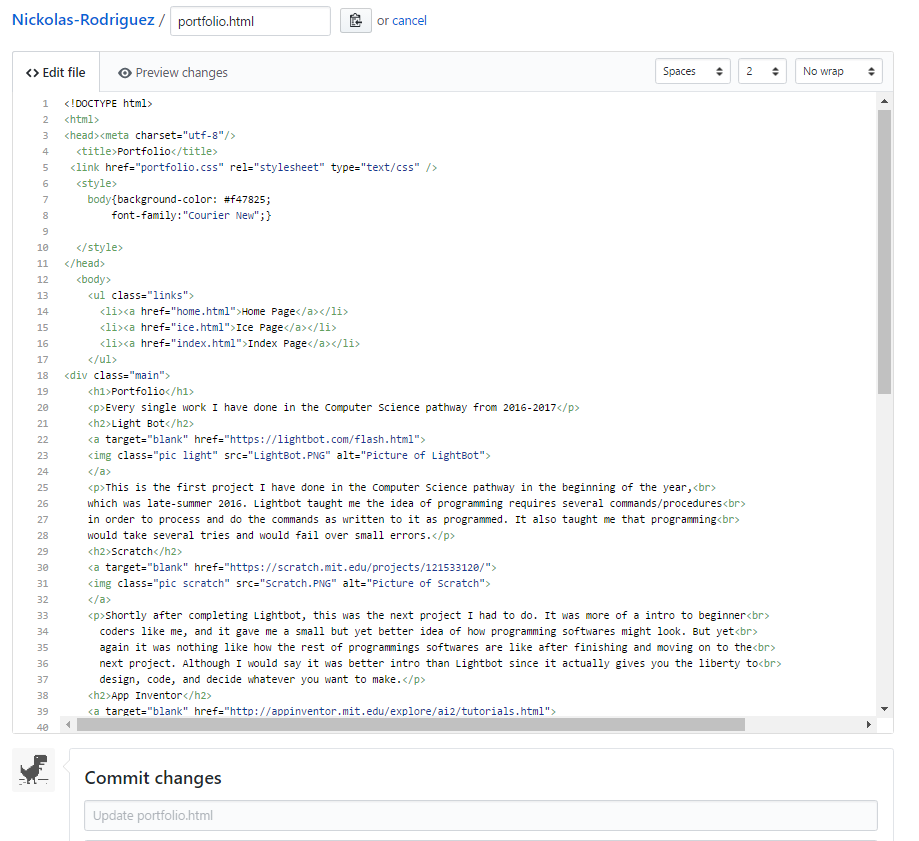
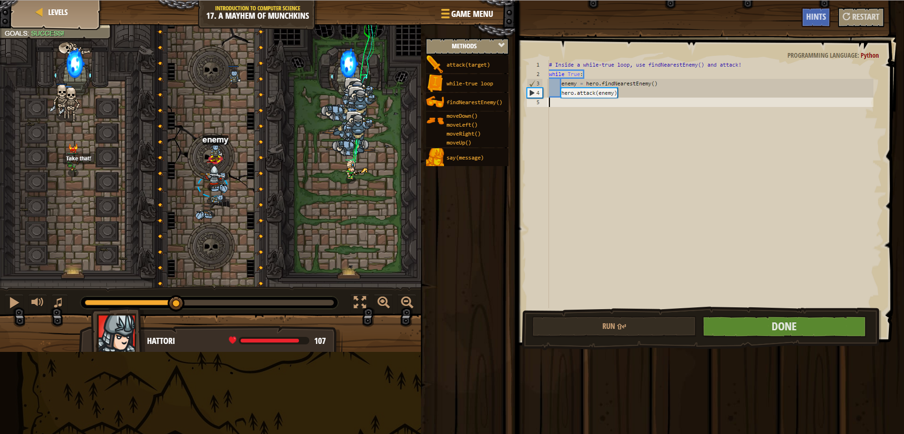
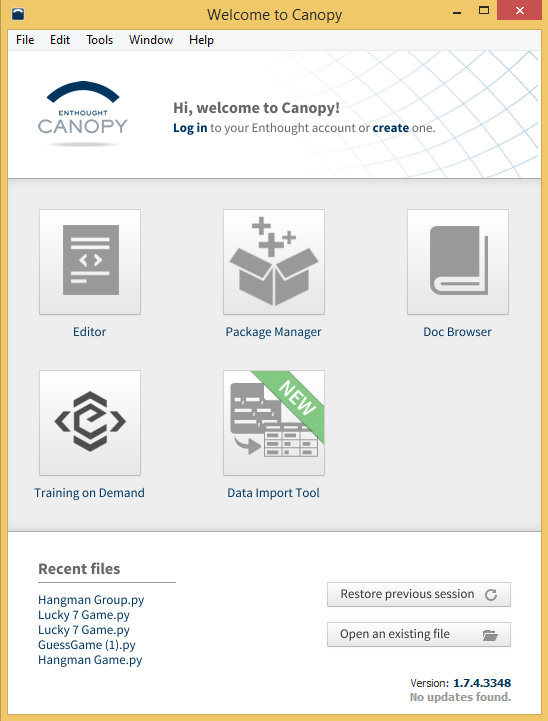
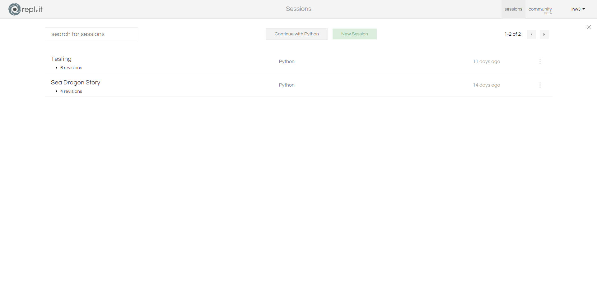

This is the first project I have done in the Computer Science pathway in the beginning of the year,
which was late-summer 2016. Lightbot taught me the idea of programming requires several commands/procedures
in order to process and do the commands as written to it as programmed. It also taught me that programming
would take several tries and would fail over small errors.
Portfolio
Every single work I have done in the Computer Science pathway from 2016-2017
Light Bot

Scratch

Shortly after completing Lightbot, this was the next project I had to do. It was more of a intro to beginner
coders like me, and it gave me a small but yet better idea of how programming softwares might look. But yet
again it was nothing like how the rest of programmings softwares are like after finishing and moving on to the
next project. Although I would say it was better intro than Lightbot since it actually gives you the liberty to
design, code, and decide whatever you want to make.
App Inventor

Next it was App Inventor. So before I was able to start my project for App Inventor, I had to learn the fundamentals
first in order to know some of the properties and functions available in the program. Which I had to do a few lessons/tutorials
before starting but was worth doing them since I learned many things about App Inventor and what you can do in it. Afterwards
I had to start making app with a team of other people in my class which were in the pathway as me. Of course it was difficult
since I had to deal with teamwork issues and so on. But after all, it gave me a small idea the processes of creating an app from
from scratch
Khan Academy

For Khan Academy the idea of doing various lessons and challenges were pretty straight forward. Which I had to go through
lessons about html and css from the beginning to the end of topic. Where the lessons teach you the basics of Html and Css
and you had to go through them in order to progress to more lessons and challenges. The challenges test your understanding of
previous lesson you have passed. At the end of each lesson there were tests which were similar to the challenges but instead
it had questions that focus on the lesson you went through and you get a score of your understanding. Anyways Khan Academy has
tremendously taught me most of the things I know so far about Html and Css.
Notepad ++

After finishing every lesson of Html and Css in Khan Academy, Notepad was next in the list of projects. I wouldn't say that
Notepad was really a project but more of a starting point of understanding how most free coding programs work and run. Also when
doing the assignment, it taught me how to open the code in a page of a browser, and how to make a link that connects the file of the
Html to a stylesheet which is the Css. Another thing in Notepad is that I learn what to expect most the free coding programs to have.
Github
As I finished the assignments for Notepad, Gitub was next. Basically for Github, the idea of the project was the same. The only difference
was learning what and how to use a respository on Github. Also learning how to create HTML/CSS on Github was another difference. So in other
words, it was basically Notepad again but with add-on features/tools. It wasn't that difficult to start getting use to Github in my experience.
Code Combat
For CodeCombat, the short online-game introduced me the idea or the fundamentals of Python. Which in my experience, the challenges(or tutorials)
weren't that too difficult to get through and progress. Although throughout every single challenges it was a fun way to introduce the fundamentals of
Python. So basically what I am trying to say in a nutshell is it was a this good "kickstarter" to introduce beginners/learners to Python.
Canopy
Enthought Canopy is a open-source software that allows you to create any computer science algorithms that is possible in Python. You can create many neat
things in Python under this software. The software itself really comes in handy when you want to create, develop, or need help with visualizing a idea that is
Python-related. With over 450 pre-built, tested Python packages, the imagination of creating all sorts of Python algorithms are endless. For example, right
below you can see a picture of a code of a game I created using this software:
As you can see here, this is one of the three codes I created which was under a assignment that I need to create. I was given what the game needs to be, and there
off I was when it begun. Brainstorming how first the algorithm in this code how it was going to be was mainly what I have largely focused from the start. I wanted mine
to be different from the rest of my other classmates. Basically I wanted my code to be unique and original. The process of brainstorming and thinking was not only what
I had to focuse on, but how it was going to opperated in the algorithm itself. Another thing is the code itself needs to work once the play button is clicked. Anyways
the code is simple from what I going to explain in: The game starts off with a short narrative, which says the player(you) only have a small amount of money to play
and your goal in the game is to win atleast $100 to win the game. If you run out of money then you will get a GAME OVER at the end. But remember the game is about rolling
the dice, basically in Python terms, picks a random numbers from generated numbers from the dices and if manages to have a total of 7 then you win some money. If not then
expect the opposite result.
repl.it
Is a cloud coding environment for mutiple programming languages. Despite having many programming languages, the tool is used for the same purpose among all of them, which is
using the tool itself to code various algorithms, loops, games, etc. Repl.it comes useful for those who want to create and develop algoritms. Basically its like Canopy but more
expand. I'm trying to not repeat myself but it helps for those coders/programmers start creating whatever they have in mind.
For here you see a flowchart of what exactly? Its a flowchart of a game, which I and another student have come up with when brainstorming ideas for a game we needed to create
as one of our projects. We started off with coming up with some story plots we come up individually and then shared then collaborated. The process worked perfectly fine,
barely a hassle was made, but we did it. Along the way, me and my partner started going deeper into the story we were making. We started asking ourselves what is the setting,
what is the characters, what is the endings, and so on. An important factor was needed in this game was decision points where it effects the results/consquences/events in the
game itself. Most liekly effecting the endings the player lands on. Since after all this is indeed a Interactive Fictional Narrative Game. We needed to go deeper in the factor
to make the game interesting enough that the player wants to play it again to find out the other endings. So basically what we did was we dicided the decision points are the
the actions the player makes in the game and later will have a dramatic effect to the ending. That is pretty much all we did in this project.
Go back to: Portfolio